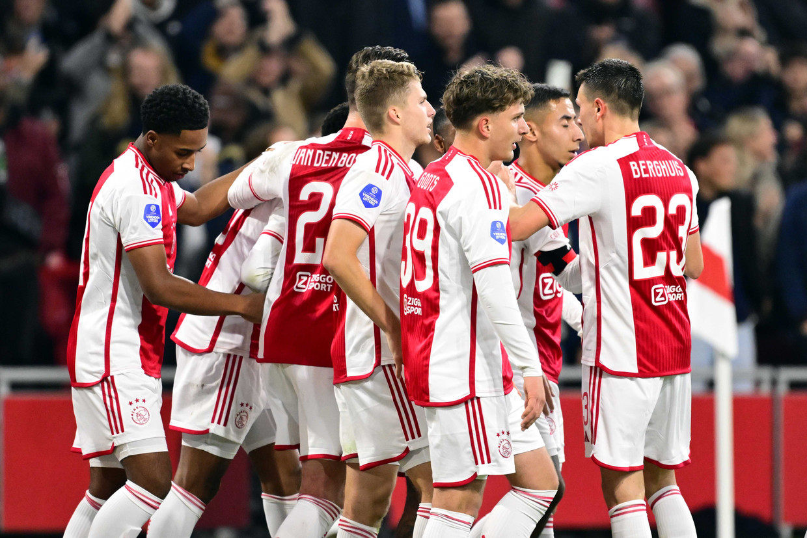

Ajax Amsterdam Fanpage
De mooiste club van Nederland
Over de club
Amsterdamsche Football Club Ajax, kortweg AFC Ajax of gewoon Ajax, is een Nederlandse profvoetbalclub uit Amsterdam. De club is opgericht op 18 maart 1900 en is één van de drie traditionele topclubs in Nederland. Sinds de oprichting van de Eredivisie speelt Ajax onafgebroken in deze hoogste divisie.
Prijzen Ajax werd zesendertig keer kampioen van Nederland, waarvan achtentwintig keer sinds de invoering van de Eredivisie medio 1956.
De historie van Ajax
In 1995 werd Ajax door het Engelse voetbaltijdschrift World Soccer uitgeroepen tot Wereldteam van het Jaar. In 2000 eindigde Ajax tijdens de FIFA Club of the Century-verkiezing, samen met het Braziliaanse Santos, op een gedeelde vijfde plaats van beste voetbalclubs van de twintigste eeuw. Daarnaast werd Ajax viermaal uitgeroepen tot Europees team van het Jaar in 1969, 1971, 1972, en 1973 en vijfmaal uitgeroepen tot Nederlands Sportploeg van het Jaar in 1968, 1969, 1972, 1987 en 1995.[7] Het is een van de zes Europese clubs die het recht heeft de Badge of Honour op de mouw te dragen door drie keer winst op rij van de Europacup I in 1971, 1972 en 1973. Die drie keer winst op rij is ook reden om als een van vijf clubs de beker te behouden. In 1995 werd de derde editie van de UEFA Champions League gewonnen en is het hiermee anno 2023 de enige club die de Europacup I/UEFA Champions League viermaal wist te winnen.